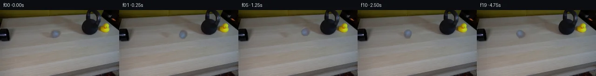

![首帧]()

Round 00
2026-11-05T11:11:06.845083+00:00像素候选变化代码 +186/−0inspection 更新
pixels 924612eed38f49af · code 0698f428cc11a219
查看本轮 generate.py 真实 diff
--- previous/generate.py +++ current/generate.py @@ -0,0 +1,186 @@ +#!/usr/bin/env python3 +"""Generate the 20-frame locked-camera tennis-ball/kettlebell sequence. + +All imagery is derived from first_frame.png. OpenCV is used only for local +pixel transforms/inpainting; artifact_io handles the required output encoding. +""" + +from pathlib import Path + +import cv2 +import numpy as np +from PIL import Image, ImageDraw, ImageFont + +import artifact_io + + +ROOT = Path(__file__).resolve().parent +WIDTH, HEIGHT = 256, 144 +BALL_SOURCE_CENTER = (117, 52) +GROUND_Y = 61 + + +def smoothstep(edge0, edge1, value): + x = np.clip((value - edge0) / (edge1 - edge0), 0.0, 1.0) + return x * x * (3.0 - 2.0 * x) + + +def make_clean_background(first): + """Remove only the initial ball and its soft shadow from the wood.""" + mask = np.zeros((HEIGHT, WIDTH), dtype=np.uint8) + # The wider ellipse includes the faint left/lower cast shadow. + cv2.ellipse(mask, BALL_SOURCE_CENTER, (17, 13), 0, 0, 360, 255, -1) + # TELEA propagates the nearby horizontal wood tones through this tiny area. + clean = cv2.inpaint(first, mask, 4.0, cv2.INPAINT_TELEA) + + # Feather the inpaint boundary so no hard oval boundary can appear. + blend = cv2.GaussianBlur(mask, (0, 0), 2.0).astype(np.float32) / 255.0 + blend = blend[..., None] + return np.clip(first * (1.0 - blend) + clean * blend, 0, 255).astype(np.uint8) + + +def extract_ball(first): + """Extract a compact feathered sprite around the visible grey ball.""" + cx, cy = BALL_SOURCE_CENTER + half = 13 + color = first[cy - half : cy + half + 1, cx - half : cx + half + 1].copy() + + yy, xx = np.mgrid[-half : half + 1, -half : half + 1] + # Slightly wider than tall, matching the softly projected body in frame 00. + radius = np.sqrt((xx / 10.8) ** 2 + (yy / 10.1) ** 2) + alpha = 1.0 - smoothstep(0.82, 1.08, radius) + return color.astype(np.float32), alpha.astype(np.float32) + + +def transform_sprite(color, alpha, angle_degrees, scale_x, scale_y): + """Rotate/scale the sprite with separate alpha to preserve a soft edge.""" + h, w = alpha.shape + center = ((w - 1) / 2.0, (h - 1) / 2.0) + rot = cv2.getRotationMatrix2D(center, angle_degrees, 1.0) + rotated_color = cv2.warpAffine( + color, rot, (w, h), flags=cv2.INTER_CUBIC, borderMode=cv2.BORDER_REFLECT_101 + ) + rotated_alpha = cv2.warpAffine( + alpha, rot, (w, h), flags=cv2.INTER_CUBIC, borderMode=cv2.BORDER_CONSTANT + ) + + new_w = max(3, int(round(w * scale_x))) + new_h = max(3, int(round(h * scale_y))) + resized_color = cv2.resize(rotated_color, (new_w, new_h), interpolation=cv2.INTER_CUBIC) + resized_alpha = cv2.resize(rotated_alpha, (new_w, new_h), interpolation=cv2.INTER_CUBIC) + return np.clip(resized_color, 0, 255), np.clip(resized_alpha, 0.0, 1.0) + + +def add_shadow(frame, x, ball_y, scale_x): + """Add a soft tabletop shadow whose strength decays during the small hop.""" + height_above_ground = max(0.0, (GROUND_Y - 9.0) - ball_y) + strength = 0.15 * np.exp(-height_above_ground / 5.0) + radius_x = 10.0 * scale_x + 0.8 * height_above_ground + radius_y = 2.3 + 0.25 * height_above_ground + + yy, xx = np.mgrid[0:HEIGHT, 0:WIDTH] + dist = ((xx - (x - 1.5)) / radius_x) ** 2 + ((yy - GROUND_Y) / radius_y) ** 2 + shadow_alpha = strength * np.exp(-2.2 * dist) + # Neutral-warm darkening integrates with the wood color. + shadow_color = np.array([55.0, 53.0, 50.0], dtype=np.float32) + a = shadow_alpha[..., None] + return np.clip(frame.astype(np.float32) * (1.0 - a) + shadow_color * a, 0, 255) … diff truncated; 99 more lines …